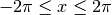

Examples¶
Calculate Square Root using Newton’s Method¶
In this example, we calculate the sqrt of a number using Newton’s method. The problem of finding the square root can be expressed as:

Which can be rearranged as:

Using Newton’s method, we can find numerically the approximate point at which
 . Repeated applications of the following expression yield
increasingly accurate approximations of the Square root:
. Repeated applications of the following expression yield
increasingly accurate approximations of the Square root:

Turning this into a practical solution, the following code calculates the square root of a floating point number. An initial approximation is refined using Newton’s method until further refinements agree to within a small degree.
/* sqrt.c */
/* Jonathan P Dawson */
/* 2013-12-23 */
/* find absolute value of a floating point number*/
float fabs(float n){
if (n < 0.0) {
return - n;
} else {
return n;
}
}
/* approximate sqrt using newton's method*/
float sqrt(float n){
float square, x, old;
x = 10.0;
old = 0.0;
while(fabs(old - x) > 0.000001){
old = x;
x -= (x*x-n)/(2*x);
}
return x;
}
/* test sqrt function*/
void main(){
float x;
for(x=0.0; x <= 10.0; x+= 0.1){
file_write(x, "x");
file_write(sqrt(x), "sqrt_x");
}
}
Note that the code isn’t entirely robust, and cannot handle special cases such
as Nans, infinities or negative numbers. A simple test calculates
 where
where  .
.

Approximating Sine and Cosine functions using Taylor Series¶
In this example, we calculate an approximation of the cosine functions using the Taylor series:

The following example uses the Taylor Series approximation to generate the Sine
and Cosine functions. Successive terms of the taylor series are calculated
until successive approximations agree to within a small degree. A Sine
function is also synthesised using the identity 
/* taylor.c */
/* Jonathan P Dawson */
/* 2013-12-23 */
/* globals */
float pi=3.14159265359;
/* approximate the cosine function using Taylor series */
float taylor(float angle){
float old, approximation, sign, power, fact;
unsigned count, i;
approximation = 1.0;
old = 0.0;
sign = -1.0;
count = 1;
power = 1.0;
fact = 1.0;
for(i=2; approximation!=old; i+=2){
old = approximation;
while(count<=i){
power*=angle;
fact*=count;
count++;
}
approximation += sign*(power/fact);
sign = -sign;
}
return approximation;
}
/* return the cosine of angle in radians */
float cos(float angle){
return taylor(angle);
}
/* return the sine of angle in radians */
float sin(float angle){
return cos(angle-(pi/2));
}
/* test routine */
void main(){
float x;
float step=pi/25;
for(x=-2*pi; x <= 2*pi; x += step){
file_write(x, "x");
file_write(cos(x), "cos_x");
file_write(sin(x), "sin_x");
}
}
A simple test calculates Sine and Cosine for the range .

Implement Quicksort¶
This example sorts an array of data using the Quick Sort algorithm
The quick-sort algorithm is a recurrsive algorithm, but Chips does not support recursive functions. Since the level of recursion is bounded, it is possible to implement the function using an explicitly created stack.
/* fft.c */
/* Jonathan P Dawson */
/* 2013-12-23 */
/* Based on the in-place algorithm on the Wikipedia page */
/* http://en.wikipedia.org/wiki/Quicksort#In-place_version */
/*globals*/
const unsigned length = 32;
/* partition subarray */
unsigned partition(
int array[],
unsigned left,
unsigned right,
unsigned pivot_index)
{
int temp, pivot_value;
unsigned i, store_index;
store_index = left;
pivot_value = array[pivot_index];
temp = array[pivot_index];
array[pivot_index] = array[right];
array[right] = temp;
for(i=left; i<right; i++){
if(array[i] <= pivot_value){
temp = array[store_index];
array[store_index] = array[i];
array[i] = temp;
store_index++;
}
}
temp = array[store_index];
array[store_index] = array[right];
array[right] = temp;
return store_index;
}
/* recursive sort */
void quick_sort(int array[]){
/* reccursive functions are not supported */
/* implement a stack explicitly */
unsigned left, right, pivot;
unsigned lefts[length];
unsigned rights[length];
unsigned stack_pointer = 1;
/* initialy push whole array onto stack */
lefts[0] = 0;
rights[0] = length-1;
while(stack_pointer){
/* pop a sub-array from stack */
stack_pointer--;
left = lefts[stack_pointer];
right = rights[stack_pointer];
/* if the subarray has two or more elements */
if (left < right){
/* partition sub array into two further sub arrays */
pivot = (left + right) >> 1;
pivot = partition(array, left, right, pivot);
/* push both subarrays onto stack */
lefts[stack_pointer] = left;
rights[stack_pointer] = pivot - 1;
stack_pointer++;
lefts[stack_pointer] = pivot + 1;
rights[stack_pointer] = right;
stack_pointer++;
}
}
}
void main(){
int array[length];
unsigned i;
/* Fill array with zeros */
for(i=0; i<length; i++){
array[i] = 0;
}
/* Add unsorted data to the array */
array[0] = 16;
array[1] = 15;
array[2] = 14;
array[3] = 13;
array[4] = 12;
array[5] = 11;
array[6] = 10;
array[7] = 9;
array[8] = 8;
array[9] = 7;
array[10] = 6;
array[11] = 5;
array[12] = 4;
array[13] = 3;
array[14] = 2;
array[15] = 1;
/* Sort the array */
quick_sort(array);
for(i=0; i<length; i++){
report(array[i]);
}
}
The algorithm is tested using an array containing out of order values. The program correctly sorts the array:
0 (report at line: 122 in file: sort.c)
0 (report at line: 122 in file: sort.c)
0 (report at line: 122 in file: sort.c)
0 (report at line: 122 in file: sort.c)
0 (report at line: 122 in file: sort.c)
0 (report at line: 122 in file: sort.c)
0 (report at line: 122 in file: sort.c)
0 (report at line: 122 in file: sort.c)
0 (report at line: 122 in file: sort.c)
0 (report at line: 122 in file: sort.c)
0 (report at line: 122 in file: sort.c)
0 (report at line: 122 in file: sort.c)
0 (report at line: 122 in file: sort.c)
0 (report at line: 122 in file: sort.c)
0 (report at line: 122 in file: sort.c)
0 (report at line: 122 in file: sort.c)
1 (report at line: 122 in file: sort.c)
2 (report at line: 122 in file: sort.c)
3 (report at line: 122 in file: sort.c)
4 (report at line: 122 in file: sort.c)
5 (report at line: 122 in file: sort.c)
6 (report at line: 122 in file: sort.c)
7 (report at line: 122 in file: sort.c)
8 (report at line: 122 in file: sort.c)
9 (report at line: 122 in file: sort.c)
10 (report at line: 122 in file: sort.c)
11 (report at line: 122 in file: sort.c)
12 (report at line: 122 in file: sort.c)
13 (report at line: 122 in file: sort.c)
14 (report at line: 122 in file: sort.c)
15 (report at line: 122 in file: sort.c)
16 (report at line: 122 in file: sort.c)
Pseudo Random Number Generator¶
This example uses a Linear Congruential Generator (LCG) to generate Pseudo Random Numbers.
/*globals*/
unsigned long int seed;
void srand(unsigned long int s){
seed = s;
}
unsigned long rand(){
const unsigned long a = 1103515245ul;
const unsigned long c = 12345ul;
seed = (a*seed+c);
return seed;
}
void main(){
unsigned i;
for (i=0; i<4096; i++){
file_write(rand(), "x");
file_write(rand(), "y");
file_write(rand(), "z");
}
}

Fast Fourier Transform¶
This example builds on the Taylor series example. We assume that the sin and
cos routines have been placed into a library of math functions math.h, along
with the definitions of  , M_PI.
, M_PI.
The Fast Fourier Transform (FFT) is an efficient method of decomposing discretely sampled signals into a frequency spectrum, it is one of the most important algorithms in Digital Signal Processing (DSP). The Scientist and Engineer’s Guide to Digital Signal Processing gives a straight forward introduction, and can be viewed on-line for free.
The example shows a practical method of calculating the FFT using the Cooley-Tukey algorithm.
/* fft.c */
/* Jonathan P Dawson */
/* 2013-12-23 */
#include "math.h"
/*globals*/
const int n = 1024;
const int m = 10;
float twiddle_step_real[m];
float twiddle_step_imaginary[m];
/*calculate twiddle factors and store them*/
void calculate_twiddles(){
unsigned stage, subdft_size, span;
for(stage=1; stage<=m; stage++){
subdft_size = 1 << stage;
span = subdft_size >> 1;
twiddle_step_real[stage] = cos(M_PI/span);
twiddle_step_imaginary[stage] = -sin(M_PI/span);
}
}
/*bit reverse*/
unsigned bit_reverse(unsigned forward){
unsigned reversed=0;
unsigned i;
for(i=0; i<m; i++){
reversed <<= 1;
reversed |= forward & 1;
forward >>= 1;
}
return reversed;
}
/*calculate fft*/
void fft(float reals[], float imaginaries[]){
int stage, subdft_size, span, i, ip, j;
float sr, si, temp_real, temp_imaginary, imaginary_twiddle, real_twiddle;
//read data into array
for(i=0; i<n; i++){
ip = bit_reverse(i);
if(i < ip){
temp_real = reals[i];
temp_imaginary = imaginaries[i];
reals[i] = reals[ip];
imaginaries[i] = imaginaries[ip];
reals[ip] = temp_real;
imaginaries[ip] = temp_imaginary;
}
}
//butterfly multiplies
for(stage=1; stage<=m; stage++){
report(stage);
subdft_size = 1 << stage;
span = subdft_size >> 1;
//initialize trigonometric recurrence
real_twiddle=1.0;
imaginary_twiddle=0.0;
sr = twiddle_step_real[stage];
si = twiddle_step_imaginary[stage];
for(j=0; j<span; j++){
for(i=j; i<n; i+=subdft_size){
ip=i+span;
temp_real = reals[ip]*real_twiddle - imaginaries[ip]*imaginary_twiddle;
temp_imaginary = reals[ip]*imaginary_twiddle + imaginaries[ip]*real_twiddle;
reals[ip] = reals[i]-temp_real;
imaginaries[ip] = imaginaries[i]-temp_imaginary;
reals[i] = reals[i]+temp_real;
imaginaries[i] = imaginaries[i]+temp_imaginary;
}
//trigonometric recreal_twiddlerence
temp_real=real_twiddle;
real_twiddle = temp_real*sr - imaginary_twiddle*si;
imaginary_twiddle = temp_real*si + imaginary_twiddle*sr;
}
}
}
void main(){
float reals[n];
float imaginaries[n];
unsigned i;
/* pre-calculate sine and cosine*/
calculate_twiddles();
/* generate a 64 sample cos wave */
for(i=0; i<n; i++){
reals[i] = 0.0;
imaginaries[i] = 0.0;
}
for(i=0; i<=64; i++){
reals[i] = sin(2.0 * M_PI * (i/64.0));
}
/* output time domain signal to a file */
for(i=0; i<n; i++){
file_write(reals[i], "x_re");
file_write(imaginaries[i], "x_im");
}
/* transform into frequency domain */
fft(reals, imaginaries);
/* output frequency domain signal to a file */
for(i=0; i<n; i++){
file_write(reals[i], "fft_x_re");
file_write(imaginaries[i], "fft_x_im");
}
}
The C code includes a simple test routine that calculates the frequency spectrum of a 64 point sine wave.